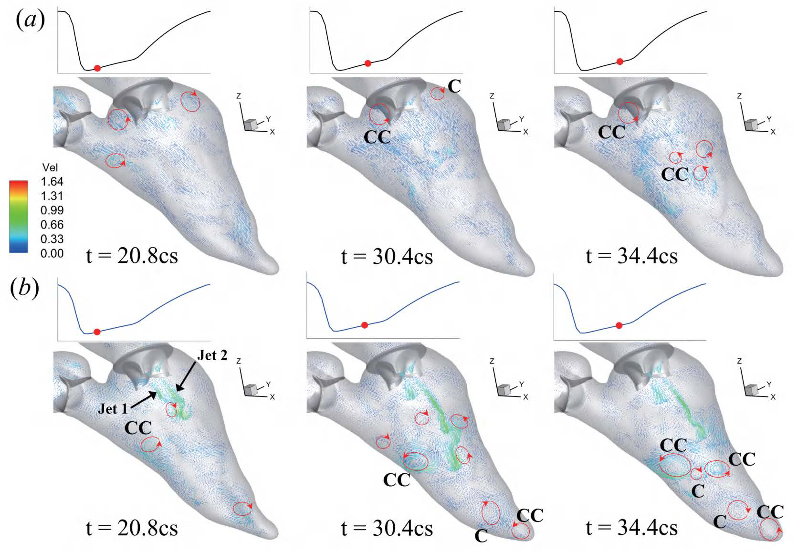

Fluid-Structure Interaction of Left Ventricle with Impaired Ventricular Contractility


Overview
This study developed a fully coupled three-dimensional fluid-structure interaction model of the left heart including both the mitral valve and aortic valve. Two pathological ejection fractions were compared: EF = 24% for severe impairment and EF = 40% for moderate impairment.
Computational Model
The model combines prescribed left-ventricular wall kinematics with passive valve deformation. Fluid dynamics are solved with a sharp-interface immersed-boundary method and valve mechanics with a nonlinear finite-element formulation, with iterative two-way FSI coupling.
Hemodynamic Findings
The EF = 40% case produced higher aortic flow and a larger mitral-valve geometric orifice area while maintaining a similar maximum aortic-valve opening. Both cases showed competent aortic-valve closure with negligible regurgitation.
Vortex Dynamics
During diastolic filling, the mitral inflow evolves from a bifurcated jet toward a central high-speed stream. Stronger and more coherent ventricular vortical flow develops for EF = 40%, while the severely impaired EF = 24% case exhibits attenuated vortical motion and weaker apical flow agitation.
Publication
Y. Wang†, Yumeng Cai†, M. Pang†, Y. Xu†, G. S. Kassab, C. Zhou, J. G. Chase, X. Chen, H. Luo, and Y. Chen, “Fluid-Structure Interaction of Left Ventricle with Impaired Ventricular Contractility,” Acta Mechanica Sinica, 42, 325410, 2026.